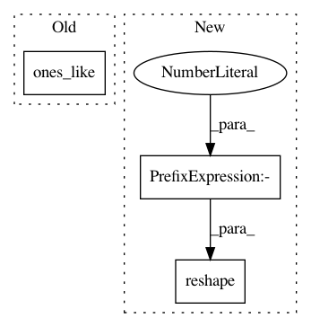

1f9ad444b5dee8b2562b7bfa1cf9f576fa32a347,src/gluonnlp/op.py,,updated_vectors_by_position,#Any#Any#Any#Any#,99
Before Change
// TODO(zheyuye), update when npx.index_update implemented
updates = add_vectors_by_position(F, F.np.zeros_like(base), data, positions)
updates_mask = add_vectors_by_position(F, F.np.zeros_like(base),
F.np.ones_like(positions), positions)
updates = (updates / F.np.maximum(1, updates_mask)).astype(np.int32)
out = F.np.where(updates, updates, base)
After Change
batch_idx = F.np.expand_dims(F.npx.arange_like(positions, axis=0),
axis=1).astype(np.int32)
batch_idx = batch_idx + F.np.zeros_like(positions)
indices = F.np.stack([batch_idx.reshape(-1), positions.reshape(-1)])
out = F.npx.index_update(base, indices, data.reshape(-1))
return out
In pattern: SUPERPATTERN
Frequency: 3
Non-data size: 3
Instances
Project Name: dmlc/gluon-nlp
Commit Name: 1f9ad444b5dee8b2562b7bfa1cf9f576fa32a347
Time: 2020-07-31
Author: 37728728+ZheyuYe@users.noreply.github.com
File Name: src/gluonnlp/op.py
Class Name:
Method Name: updated_vectors_by_position
Project Name: rail-berkeley/softlearning
Commit Name: 97a8df33c3dd671cd09d8499dcc5d55ecad6b666
Time: 2019-02-01
Author: hartikainen@berkeley.edu
File Name: softlearning/algorithms/sql.py
Class Name: SQL
Method Name: _create_svgd_update
Project Name: dmlc/gluon-cv
Commit Name: ecfc31e21d0c30b1f543aacb8619582b60a1bef7
Time: 2019-08-29
Author: spanev@nvidia.com
File Name: gluoncv/model_zoo/mask_rcnn/rcnn_target.py
Class Name: MaskTargetGenerator
Method Name: hybrid_forward